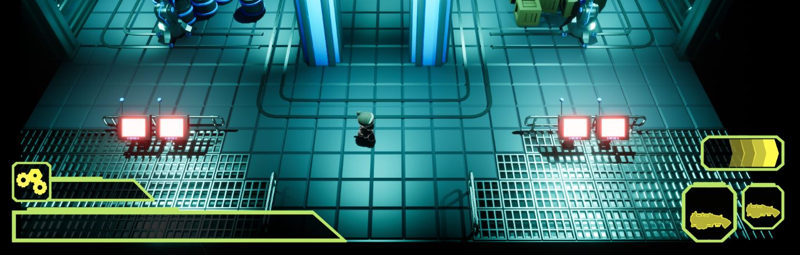

Monday, December 5th
Following the milestone presentation on Friday, the team started looking toward implementing all the
planned features as quickly as possible, since we wanted to start playtesting and polishing the experience.
I started expanding the turtorial level to enable some basic playtesting and preparing for a completed tutorial portion.
As I knew that I would need to create and handle a sizeable amount of prefabs in the coming weeks, I then started
acquainting myself with how to use them and made some for the corridors that connect our rooms.
Both Hari and I then started working on tweaking numbers and roughly balancing the game. We felt this process was of
the utmost imporance which is why we wanted to start it as early as we could,
and then keep adjusting until the project is concluded. Finally, I started working on designs for the shop UI.
Oskar made visual effects for smoke, sparks, gunfire, the enemy's attack charge-up and bullet trails for the player.
Felicia finished the final enemy model, and both Victor and Ellinor worked on creating rooms.
David worked on the procedural generation and Anton and André worked on miscellaneous systems.
Hari started looking for permanent sounds to use in place of the temporary ones I had found previously,
made new room designs and worked on the guns.
Tuesday, December 6th
During the tuesday I did some structuring around the project, and helped out others both within and outside the team.
I also continued working on the guns, and made more UI concepts.
Oskar added explosion effects that play when enemeis are destroyed and gave Scrap an outline for visibility.
Ellinor and Victor kept working on rooms, and Hari worked with sounds. The programmers mostly continued working
on what they did the day before.

Wednesday, December 7th
On wednesday I stayed home with a migrane most probably caused by the excessive strain of singlehandedly having to handle all the work meant for three designers during the prior weeks.
Thursday, December 8th
Thursday I was back again! Felicia and I cooperated on making game ready HUD assets and implemented them.
Following this, André, Hari and myself started the process of recording voice lines for the shopkeeper NPC,
who also functions as our only direct communication channel with the player.
Oskar made animations for pickups and some VFX for the final enemy, as well as fixing up the old reload animation.
Victor and Ellinor kept working on room creation, Anton did work on the behaviour of all the enemies including,
and David made good progress on coding the generation.

Friday, December 9th
I started working on making rooms work with generation, as we had used a more primitive solution up to this point which
only worked with hand placed rooms. With procedural generation getting ever closer to completion, I spent some time setting
up functionality within the systems. I also worked on getting the base for a main menu working, completing the most fundamental
aspects.
Victor worked on more rooms
Oskar made vfx
Anton created the chest system and worked on